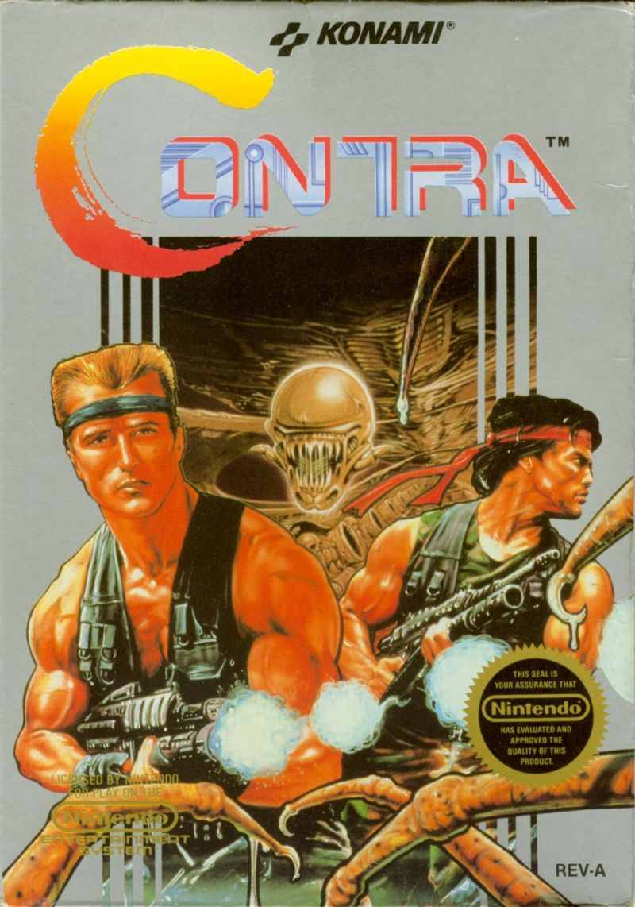

<!-- <div class="row">
  <div class="col-md-2">
    <mat-card class="example-card">
      <mat-card-header>
        <mat-card-title>Contra</mat-card-title>
        <mat-card-subtitle>Konami</mat-card-subtitle>
      </mat-card-header>
      
      <mat-card-content>
        <p>
          The Shiba Inu is the smallest of the six original and distinct spitz
          breeds of dog from Japan. A small, agile dog that copes very well with
          mountainous terrain, the Shiba Inu was originally bred for hunting.
        </p>
      </mat-card-content>
      <mat-card-actions>
        <button mat-button>LIKE</button>
        <button mat-button>SHARE</button>
      </mat-card-actions>
    </mat-card>
  </div>
</div> -->

<div class="container">
  <div class="row">
    <div class="col-md-6">
      <div class="card text-white bg-dark mb-3">
        <div class="row g-0">
          <div class="col-md-4">
            
          </div>
          <div class="col-md-8">
            <div class="card-body">
              <h5 class="card-title">Contra</h5>
              <p class="card-text">
                Contra is a run-and-gun shooter video game developed and
                published by Konami, originally developed as a coin-operated
                arcade game in 1986 and released on February 20, 1987. A home
                version was released for the Nintendo Entertainment System in
                1988, along with ports for various home computer formats,
                including the MSX2. The arcade and computer versions were
                localized as Gryzor in Europe, and the NES version as
                Probotector in PAL regions.
              </p>
              <p class="card-text">
                <small class="text-muted">Last updated 3 mins ago</small>
              </p>
            </div>
          </div>
        </div>
      </div>
    </div>
    <div class="col-md-6">
      <div class="card text-white bg-dark mb-3">
        <div class="row g-0">
          <div class="col-md-4">
            
          </div>
          <div class="col-md-8">
            <div class="card-body">
              <h5 class="card-title">Metroid</h5>
              <p class="card-text">
                Metroid is a Japanese action-adventure game franchise created by
                Nintendo. The player controls bounty hunter Samus Aran, who
                protects the galaxy from the Space Pirates and their attempts to
                harness the power of the parasitic Metroid creatures.
              </p>
              <p class="card-text">
                <small class="text-muted">Last updated 3 mins ago</small>
              </p>
            </div>
          </div>
        </div>
      </div>
    </div>
  </div>
</div>
